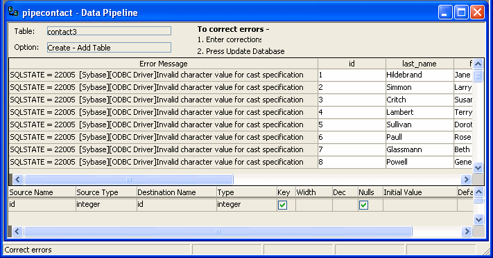

If the pipeline cannot pipe certain rows to the destination table for some reason, PowerBuilder displays the following information for the error rows:
The following screen shot displays this information:

You can correct the error rows by changing one or more of their column values so the destination table will accept them, or you can ignore the error rows and return to the Data Pipeline painter workspace. If you return to the workspace, you cannot redisplay the error rows without re-executing the pipeline.
 Before you return to the workspace You might want to print the list of errors or save them in
a file. Select File>Print or File>Save As from
the menu bar.
Before you return to the workspace You might want to print the list of errors or save them in
a file. Select File>Print or File>Save As from
the menu bar.
 To return to the Data Pipeline painter workspace
without correcting errors:
To return to the Data Pipeline painter workspace
without correcting errors:
Click the Design button.
 To correct pipeline errors:
To correct pipeline errors:
Change data values for the appropriate columns in the error rows.
Click the Update DB button, or select Design>Update Database from the menu bar.
PowerBuilder pipes rows in which errors were corrected to the destination table and displays any remaining errors.
Repeat steps 1 and 2 until all errors are corrected.
The Data Pipeline painter workspace displays.
Sometimes you cannot see an entire error message because the column is not wide enough. Move the pointer to the error message and press the Right Arrow key to scroll through it. You can also drag the Error Message column border to the width needed.
 Making the error messages shorter For ODBC data sources, you can set the MsgTerse database parameter
in the destination database profile to make the error messages shorter.
If you type MsgTerse = 'Yes',
then the SQLSTATE error
number does not display. For more information on the MsgTerse parameter
Making the error messages shorter For ODBC data sources, you can set the MsgTerse database parameter
in the destination database profile to make the error messages shorter.
If you type MsgTerse = 'Yes',
then the SQLSTATE error
number does not display. For more information on the MsgTerse parameter